Volcanic Features of Victoria's Western District
The volcanic plains of the Western District of Victoria (Australia) are Recent in age and illustrate a variety of well preserved terrestrial volcanic landforms. Local aboriginal legends record the eruption of some of the volcanoes of the area.
The following descriptions are based on a field trip undertaken as part of the "Volcanics Workshop 1984 - Continental Basaltic Volcanism ran by Monash University (Melbourne) and convened by Dr Ray Cas, Bernie Joyce, Ian Nicholls and Dick Price, from the 3rd to the 6th of December 1984. The photos on this site were all taken by Grant Boxer and edited for display on the web. The exposures are excellent and I recommend that any geologist interested in volcanoes that is visiting Victoria, take the time to see some of these great outcrops. With this in mind, I have attached the excursion map (from the papers presented at the Workshop), and maps of Lake Purrembete, and the volcanic complexes of Tower Hill, Mt Leura and Mt Eccles. If additional information is required, please don't hesitate to contact me.
Location Maps
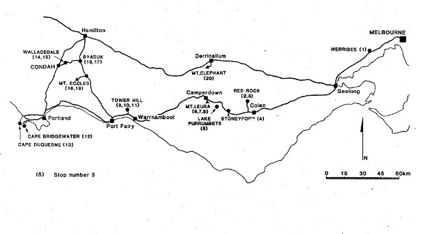
Location Map for the Victorian Western District Volcanic Field
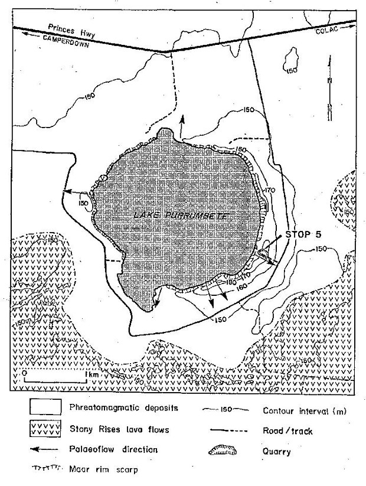Purrembete Maar
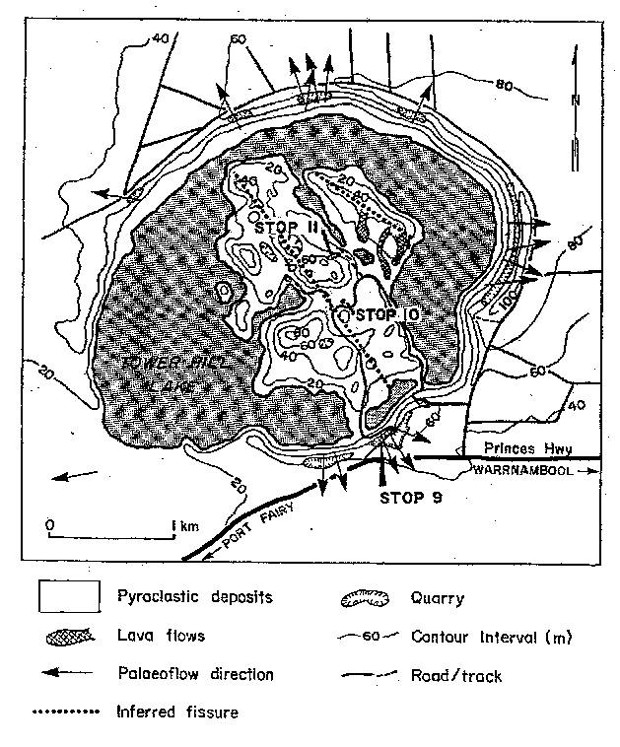Tower Hill Maar Complex
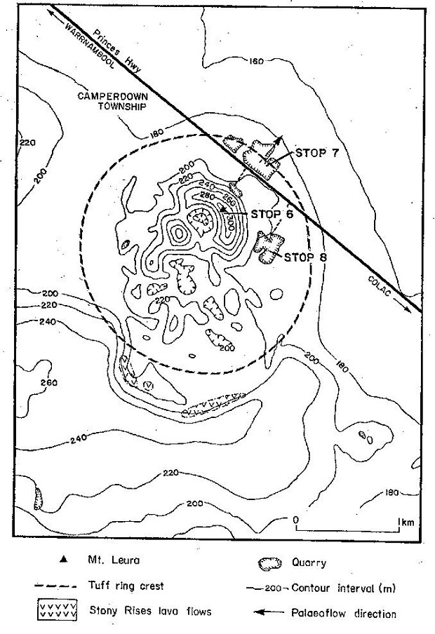Mount Leura Maar Complex
Maars
Maars are typically large, circular and shallow craters that have formed by phreatomagmatic eruption. Prof Volker Lorenz has written numerous papers on maars and their formation and the reader is referred to this paper in particular.
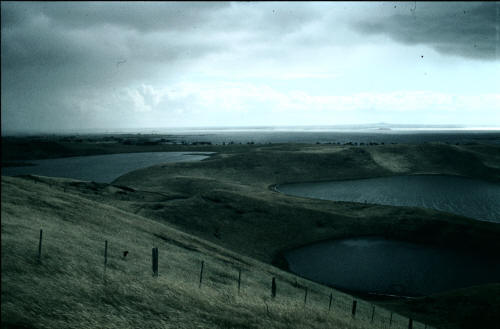Lake Werowrap maars, Red Rock Volcanic Complex
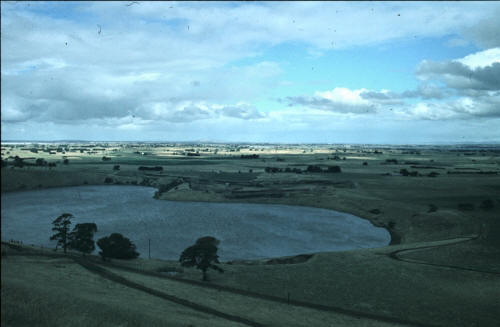Lake Purdiguluc maars, Red Rock Volcanic Complex
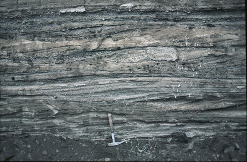Bedded tuffs in the rim deposits of the Lake Purrembete maar
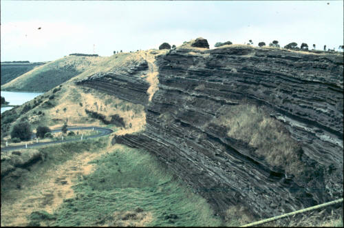Interbedded phreatomagmatic and strombolian tuffs in the rim deposits of the Tower Hill maar
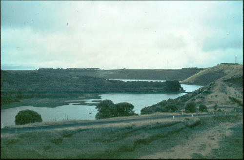View of the eastern part of the large Tower Hill maar
Phreatomagmatic Deposits
The deposits of phreatomagmatic eruption are characterised by fine ash sizes, high energy depositional environment for rim deposits, chilled magma clasts and accretionary lapilli indicative of a wet eruption environment. Low angle cross bedding in the maar rim tuff deposits is indicative of deposition during high energy base surge activity where the surge is traveling outwards away from the vent. In the photos taken in the Western District of Victoria, the phreatomagmatic tuff deposits are typically light in colour due to their fine grain sizes, and contrast to the darker colours of the strombolian type (fire fountaining) of deposits where the tuffs are typically composed of scoria.
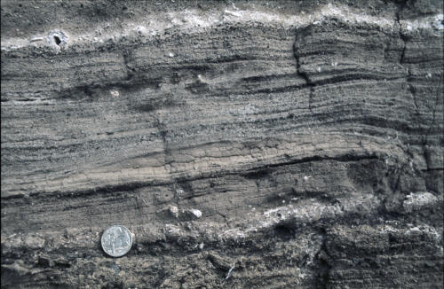Laminated and cross bedded ash, Lake Purdiguluc maar
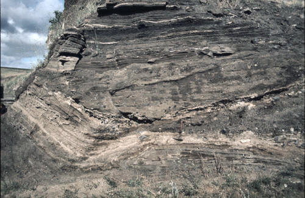Phreatomagmatic ashes (lower light coloured tuffs) and strombolian ash (dark ash) at the Lake Purdiguluc maar
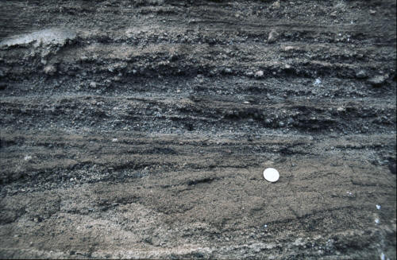Low angle truncations of bedding features in base surge deposits at the Lake Purdiguluc maar
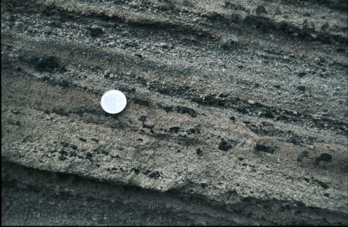Tuffs containing delicate scoria fragments at the Mt Leura Volcanic Complex

Cross bedded and planar bed forms in phreatomagmatic tuffs at the Mt Leura Volcanic Complex
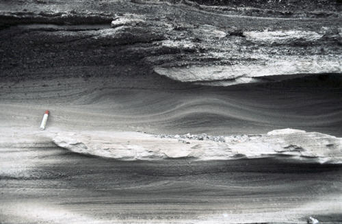Sand wave bed forms and cross bedding in phreatomagmatic tuffs at the Tower Hill maar complex
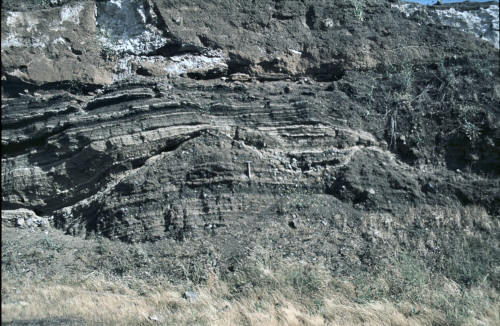Scour channel cutting base surge deposits at the Lake Purdiguluc maar
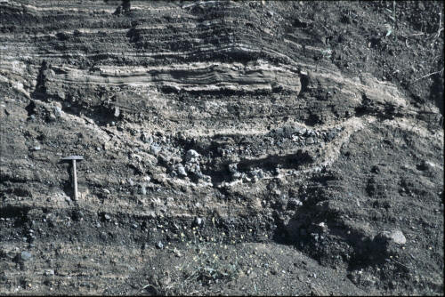Detail of slide on left showing the scour channel and its infill, Lake Purdiguluc maar
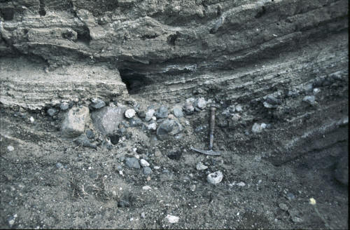Close-up detail of the scour channel in photos on the left showing gravel lag in the base of the channel
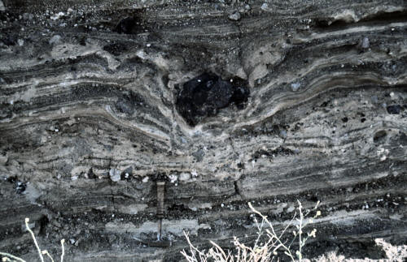Volcanic bomb sag in tuffs at the Lake Purdiguluc maar
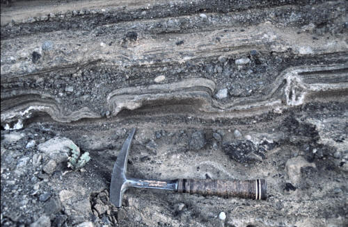Volcanic bomb sags in tuffs at the Lake Purdiguluc maar
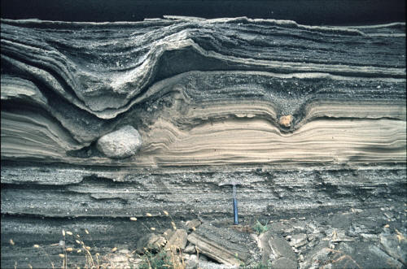Volcanic bomb sags in tuffs at the Tower Hill maar complex
Scoria Cones
The volcanic plains of the western Victoria have numerous conical hills that comprise scoria cones. The Sugarloaf (see photo on left) is a classic example that is found near Mt Leura. These scoria cones are produced by fire-fountaining and where vesicular pyroclastics are deposited around the vent.
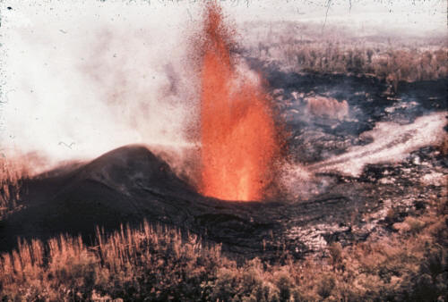The photo above is from Hawaii (from geological Museum London) and show a fountain of red-hot lava surround by a cinder (scoria) cone and a lava flow leading away into the distance.
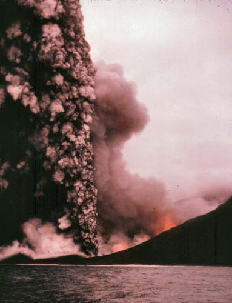
The second photo (from geological Museum London) is from Surtsey (Iceland) shows the effect of water on an erupting volcano. To the right of the photo can be see the fire-fountaining producing the scoria cone material. On the left the eruption cloud is white with steam and very violent, indicating the interaction of water and the rising molten magma. The fragments in this steam charged cloud are dark as they have been chilled by the contact with water.
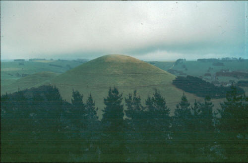
Sugarloaf scoria cone from Mt Leura
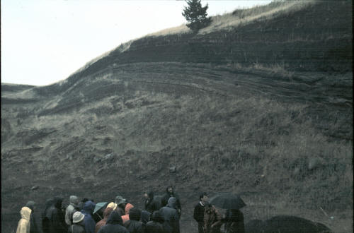Strombolian scoria deposits overlying light coloured phreatomagmatic tuffs at the Mt Leura Volcanic Complex
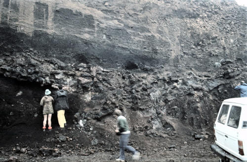Scoria overlying volcanic bomb beds at the Mt Leura Volcanic Complex
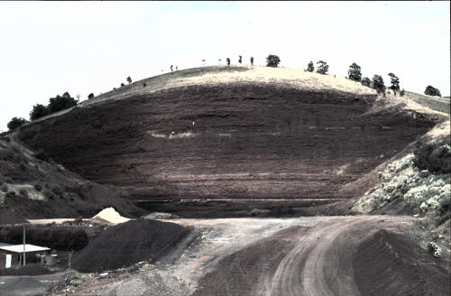Quarry in scoria at the Mt Eccles Volcanic Complex